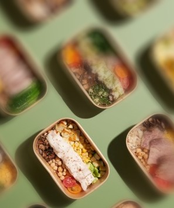

Welcome to our showroom, showcasing StoryMaps from S1 to S3 students celebrated in the Category 2 awards.
The CSDI Awards 2024, themed "Present Spatial Data · Map our Future" highlight how spatial data can shape our cities’ tomorrow.
Each entry features an an interactive web map showing the location and spatial distribution of a phenomenon or geographic features, using map reading skills to explain observed patterns.
Plastic-Free City, Smart Sharing
More Info
Tung Wah Group of Hospitals Wong Fut Nam College
"Plastic-free" is Hong Kong's new trend. This team designed "Tableware Anywhere," a smart eco-friendly utensil borrowing machine, using community and land data to place it in busy commercial areas.
Off-campus lunch options among schools in Hong Kong

More Info
Po Leung Kuk Ngan Po Ling College
Can all students go out for lunch? This team analyzed school and restaurant data to identify schools where students struggle to dine off-campus conveniently.
"Charge" Toward a New Future
More Info
Kowloon Sam Yuk Secondary School
To achieve zero emissions by 2050, Hong Kong promotes electric vehicles. This team analyzes spatial data to map charging station distribution and suggest new locations.
Accessibility: The Heartbeat Of Community
More Info
The Hong Kong Academy for Gifted Education
Walkability and accessibility are key to healthy communities. This team compares road networks and facilities in Tsuen Wan and Kwun Tong North to enhance walkability.